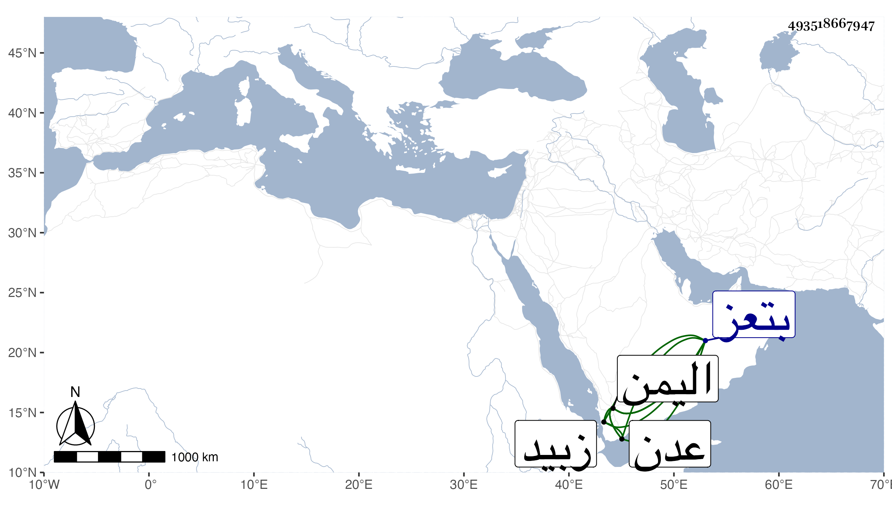

0902Sakhawi.DawLamic.ITO20230111-ara1.EIS1600.493518667947
Biography ID: 493518667947
954
يحيى بن إسماعيل بن العباس بن علي بن داود بن يوسف بن عمر بن علي بن رسول الماضي حفيده يحيى بن أحمد بن يحيى قريبا ويسمى أيضا عبد الله ، وقد ذكره شيخنا بزيادة أحمد بينه وبين إسماعيل والصواب حذفه . وكان استقراره في جمادى الأولى سنة إحدى وثلاثين ولقب بالظاهر هزبر الدين بن الأشرف بن الناصر وقال بعضهم أنه ملك اليمن في رجب سنة ثلاثين فدام نحو اثنتي عشرة سنة وضعفت مملكته وخربت ممالك اليمن في أيامه لقلة محصوله بها من استيلاء العرب على أعمالها . ولم يزل كذلك حتى مات في يوم الخميس سلخ رجب ، وقال بعض الآخذين عني أنه ولي بعد خلع ابن أخيه الأشرف إسماعيل بن الناصر أحمد لصغره فقام بالملك وظهرت نجدته وصرامته ودانت له البلاد والعباد وعمر مدرسة بتعز وأخرى بعدن ووقف عليهما الأوقاف الجليلة ووقف بالأولى كتبا كثيرة وطالت أيامه غير أنه كان مدعيا في العلوم ويتكلف في أوراقه السجع الملحون كما قاله الحافظ ابن الخياط في وفياته ولكن كان ابن الخياط لكونه محبوبا عند أهل بلده لا يحبه الظاهر جريا على عادته في عدم محبته لذوي الوجاهات ويتجنى له الذنوب وربما قصده بمكروه فلم يقدره الله عليه . مات الظاهر في رجب سنة اثنتين وأربعين بزبيد وحمل لمدرسته بتعز فدفن بها واستقر بعده ابنه الأشرف إسماعيل الماضي .
